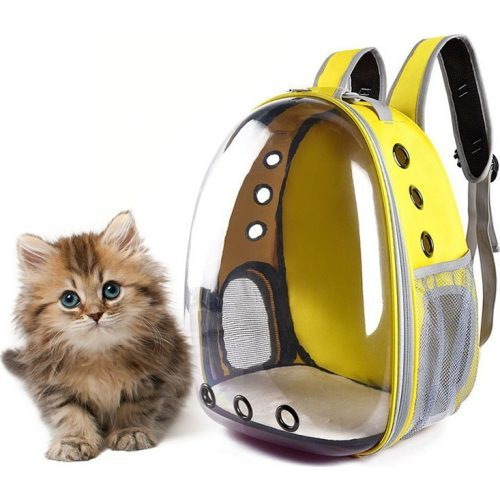
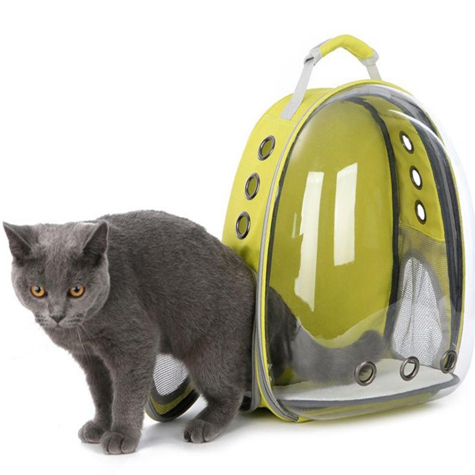

СУМКИ, РЮКЗАКИ И ПЕРЕНОСКИ ДЛЯ КОШЕК


Всегда вместе с любимыми питомцами.
РЮКЗАКИ
- Животное наблюдает за всем происходящим через сетку либо специальное отверстие для головы, но покинуть рюкзак самостоятельно не сможет.
- Даже если пушистик «сходит в туалет» в переносном рюкзаке – не проблема:он изготовлен из прочного материала, но параллельно устойчива к загрязнениям, выгоранию и легко чистится.
- Будучи на спине или на груди у хозяина – кошечка всегда чувствует себя защищённой.
- Вам открыты все двери в общественные места по типу банков, магазинов, специализированных учреждений.
- Животное наблюдает за всем происходящим через сетку либо специальное отверстие для головы, но покинуть рюкзак самостоятельно не сможет.
- Даже если пушистик «сходит в туалет» в переносном рюкзаке – не проблема:он изготовлен из прочного материала, но параллельно устойчива к загрязнениям, выгоранию и легко чистится.
- Будучи на спине или на груди у хозяина – котик всегда чувствует себя защищённой.
- Вам открыты все двери в общественные места по типу банков, магазинов, специализированных учреждений